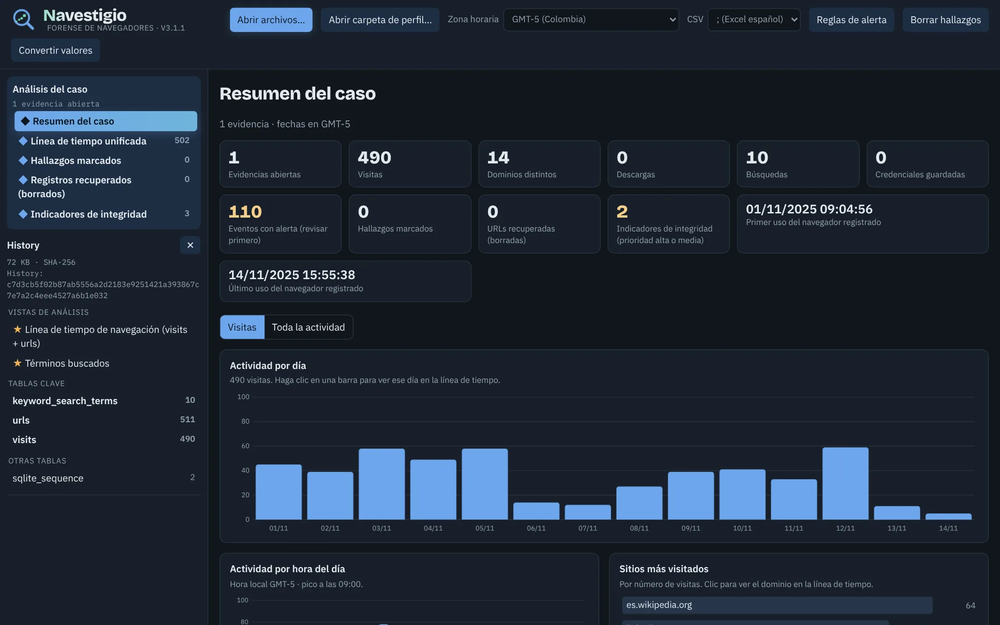
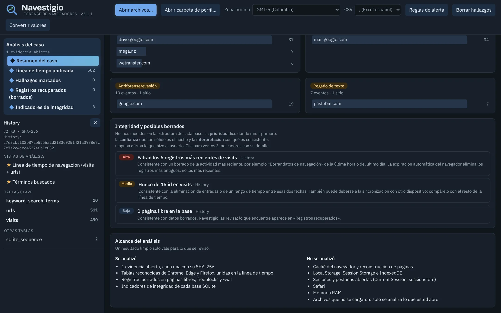
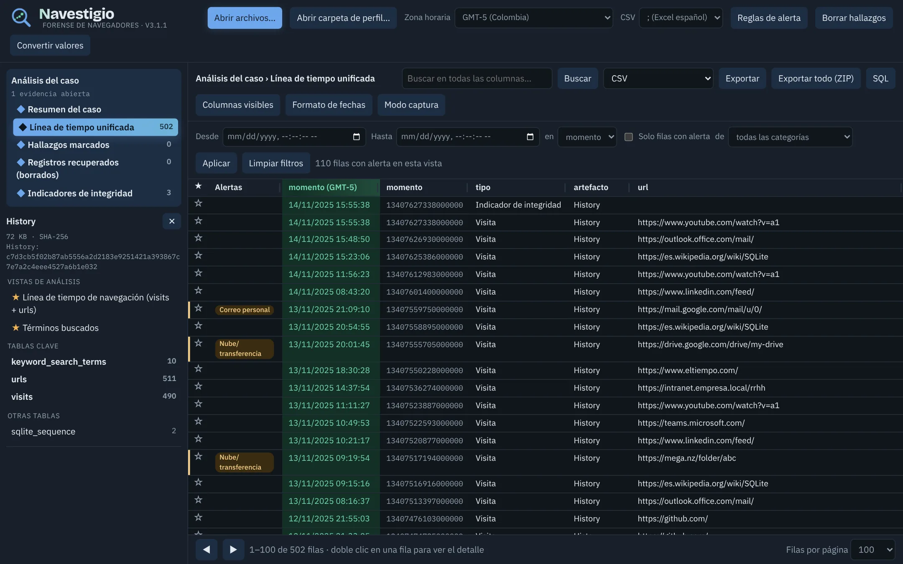

Siga las huellas que deja quien navega.
Navestigio es una herramienta gratuita de análisis forense de navegadores. Analiza el historial, las descargas, las cookies y las credenciales de Chrome, Edge, Firefox y Safari en una sola página que funciona sin internet. La evidencia no sale del equipo y no se modifica.
Windows, macOS y Linux · Sin instalación · Uso gratuito · licencia comercial para empresas

Las preguntas de un caso, en una sola herramienta
Abra los archivos del perfil y Navestigio cruza todo en una línea de tiempo en su hora local. Cada vista responde una pregunta concreta.
¿Qué pasó?
Visitas, descargas, búsquedas y credenciales, con actividad por día y por hora y los sitios más visitados.
¿Cuándo?
Todos los artefactos en una sola tabla. Desde cualquier fila puede ver lo que pasó 5, 15 o 60 minutos antes y después.
¿Qué se borró?
Recupera URLs de páginas libres, freeblocks y el -wal, y detecta huecos y borrados aunque no quede nada que recuperar.
¿Qué buscó?
Saca las búsquedas de la URL en Google, Bing, YouTube y otros once sitios, e interpreta cookies de Google Analytics.
¿Qué reviso primero?
Reglas editables por categorías de política de uso: nube, antiforense, malware, contenido sexual, material ilegal y más.
¿Qué entrego?
Un ZIP con informe, manifiesto con SHA-256 y MD5, y sumas que otro perito verifica con un solo comando.

Detecta el borrado aunque no se recupere nada
SQLite deja rastros cuando se borra: contadores que no cuadran, huecos en los id, fechas que retroceden. Navestigio los mide y los presenta sin exagerar.
- PrioridadDónde mirar primero. No es una acusación.
- ConfianzaQué tan sólido es el hecho medido.
- InterpretaciónCon qué es consistente el hecho, por ejemplo «borrado de la actividad más reciente».
Y un bloque de alcance que dice qué no se analizó, para que un resultado limpio no pase por completo.
Cada fila dice de dónde viene
La línea de tiempo distingue un registro vigente de uno recuperado o de un indicador, con su confianza y el origen de la fecha. Un registro borrado nunca se confunde con una visita confirmada.
Exporte en CSV para Excel, en JSONL para Timesketch o jq, en bodyfile para mactime o en l2t CSV para Plaso.

Hecho para manejar evidencia
Una herramienta forense que se descarga de internet tiene que ganarse la confianza. Esto es lo que garantiza Navestigio y cómo comprobarlo.
- Nada sale del equipoUna política de seguridad (CSP) bloquea toda conexión de red. No hay telemetría ni recursos externos.
- La evidencia no se modificaSe lee una copia en memoria, en solo lectura. El -wal se aplica a esa copia, nunca al original.
- Hashes de todoSHA-256 y MD5 de cada archivo abierto, y SHA-256 de cada archivo exportado.
- Evidencia hostil bajo controlLas consultas corren en un Web Worker. Una base maliciosa se cancela sin congelar la página.
- Exportaciones segurasLos CSV neutralizan fórmulas, y el informe HTML no lleva scripts.
- Compilación verificableCada cambio regenera la app desde el código fuente, compara sql.js con npm byte a byte y corre pruebas en Chromium.
Empezar en tres pasos
No necesita instalar nada. Python es opcional: solo sirve para abrirla como aplicación en 127.0.0.1.
- Descargue y verifiqueBaje el zip de la última versión y compare su SHA-256 con el publicado en el release.
- Abra NavestigioDoble clic en
iniciar_navestigio.bat, o ennavestigio.htmlen Chrome, Edge o Firefox. - Cargue la evidenciaArrastre los archivos o abra la carpeta del perfil. Navestigio reconoce cada artefacto.
certutil -hashfile navestigio-3.4.1.zip SHA256 # Windows
sha256sum -c navestigio-3.4.1.zip.sha256 # Linux o macOSApoye el proyecto
Navestigio es gratuito y lo desarrollo en mi tiempo libre. Si le ahorra horas en sus casos, su apoyo me ayuda a dedicarle más tiempo y a sumar nuevos artefactos. ¡Gracias!
GitHub Sponsors no cobra comisión: todo llega al proyecto.
Artefactos soportados
Chrome, Edge y otros navegadores basados en Chromium, Firefox y Safari.
Historial
History, places.sqlite y History.db de Safari: visitas, transiciones, búsquedas, descargas con su cadena de redirecciones.
Credenciales y formularios
Login Data y Web Data: credenciales guardadas (cuenta las contraseñas cifradas) y autocompletar.
Cookies
Cookies de Chromium y Firefox, con interpretación de Google Analytics, BIG-IP y Quantcast.
Navegación rápida
Shortcuts de la barra de direcciones, Top Sites y Favicons con su miniatura.
Perfil
Bookmarks, Preferences, Secure Preferences y Local State: cuentas, extensiones y perfiles.
Edge
Colecciones de Edge (collectionsSQLite).
Sesiones
sessionstore.jsonlz4 de Firefox: pestañas abiertas y cerradas, con su fecha de último uso o de cierre.
Extensiones
Carpeta Extensions de Chromium y extensions.json de Firefox, con los permisos sensibles destacados.
Borrados en Safari
Los tombstones de Safari prueban que se borró historial y de qué rango de fechas.
Gratis para analizar. Enterprise para la organización.
La versión gratuita seguirá siendo la mejor forma de analizar un caso. Enterprise suma lo que necesita un equipo de respuesta a incidentes: muchos equipos en un mismo caso, detección de fuga de información y casos que se guardan y se retoman.
Navestigio
Para analistas, peritos y estudiantes.
- Chrome, Edge, Brave, Opera, Firefox y Safari
- Línea de tiempo unificada, alertas y búsquedas interpretadas
- Registros borrados, indicadores de integridad y tombstones de Safari
- Sesiones de Firefox, extensiones y perfiles detectados
- Paquete de entrega verificable con SHA-256 y cadena de custodia
- Funciona sin internet; la evidencia no sale del equipo
Navestigio Enterprise
Para equipos de respuesta a incidentes, consultoras y áreas de seguridad.
- Todo lo de la versión gratuita
- Caso multi-equipo y multi-usuario: colecciones de KAPE, Velociraptor o una imagen montada en una sola línea de tiempo
- Detección de exfiltración: nubes personales, transferencias, webmail personal, picos de descargas e IA generativa
- Caso persistente: guarde y retome el caso cifrado, con marcadores, etiquetas y notas
- Interfaz en inglés
- Después: IOC propios (STIX, MISP), reglas de la organización, informe con su marca y paquete firmado
Programa de pioneros: 30 % de descuento para las primeras 10 organizaciones que se sumen al acceso anticipado.
| Función | Gratuita | Enterprise |
|---|---|---|
| Análisis de un perfil o de la carpeta de un usuario | Sí | Sí |
| Integridad, registros borrados y cadena de custodia | Sí | Sí |
| Exportación CSV, JSONL, bodyfile y l2t | Sí | Sí |
| Muchos equipos y usuarios en un mismo caso | — | Sí |
| Detección de exfiltración de información | — | Sí |
| Guardar y retomar el caso cifrado | — | Sí |
| Interfaz en inglés | — | Sí |
| Soporte | Issues en GitHub | Correo directo |
La exactitud forense nunca se cobra. Todo lo que decide si un resultado es correcto (nuevos navegadores, integridad, registros borrados y cadena de custodia) sigue llegando a la versión gratuita. Enterprise cobra por escala, automatización y trabajo en equipo.